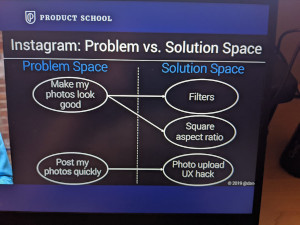

Find needs and value proposition

Map the problem space to the solutions space
unmet needs (problem space) -> value propositions (problem space) -> | -> feature set (solution space)
Example: Instagram
unmet need: beautiful pictures -> | -> filters and square photo that looks great as an album
unmet need: fast -> | -> ux hack during photo upload

Improve product/market fit by writing a 'Value Proposition Grid'
Example: Instagram

Use your value proposition for marketing
Example: Instagram